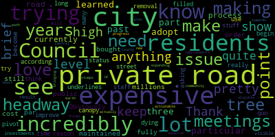
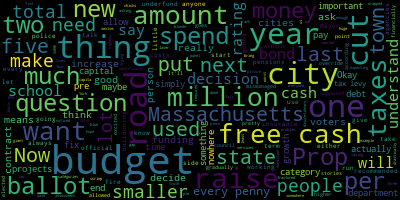
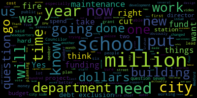
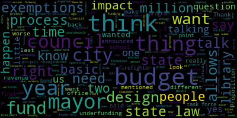
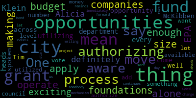
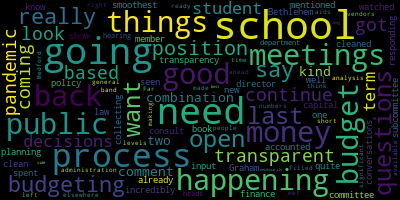
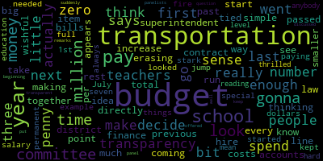

AI-generated transcript of Invest in Medford Town Hall
Back to all transcripts
[SPEAKER_04]: Can I ask a question without writing? My hand is broken. Oh, okay. Thank you.
[Collins]: I can't show you anything.
[Jessica]: All right, everybody, let's get started. Thank you again for being here. My name is Jessica. I'm a third-generation Medford resident, and I come from a long line of teachers. And I'm one of the many wonderful volunteers on the Invest in Medford campaign. I'm really excited to be here with you all tonight in this beautiful, gorgeous Medford Public Library. And the point of this event is to be a guided conversation with our elected officials who are spearheading these and other question initiatives. So thank you for spending one day with us. And before we get into everything, I just want to let you all know how the format of this is going to go. It's a little bit different. It's a little bit interesting. But the whole point of this is to be engaging with that community center. If you have some questions, we're not posting those. We'll be saving those for the end. But in terms of how this is going to function, All of the questions will be answered. They have two minutes to respond just to keep things moving because we do have a hard stop at 8.30 out of respect for our library staff. So time questions will be limited. All questions that we are taking today are over there. So that will happen at the end of our informational section of the panel. And just to make sure that we stay on time and don't keep everybody here too late, we're not going to be doing a long line for questions. We're just going to be taking them In addition, this will be recorded and will be posted online, so if there's someone out there that wasn't able to attend this evening, that is looking for more information, that will be made available. In the back of the room, we have some resources. So please feel free to take them, give them a read, take them home with you, give them to a friend. All of that is available to you. And myself, as well as many people in here, are volunteers for the campaign. If you have any questions, I'm really excited because the volunteer energy that we have for parents and teachers and homeowners and renters really coming together and making this campaign what it is, I'm very excited to be here with you tonight. So, without further ado, to introduce our panelists. So we have Mary Graham on the left side this evening, City Councilor Anna Callahan and City Vice Chair Ben Grant. I'm honored to be sitting here next to the three of you, so thank you so much for what you do and what you're able to do this evening. So to start off this evening, I'd like to pass over to Mary Graham.
[Graham]: Can you all hear me? Hi everyone, my name is Jenny Graham. I think I know many or most of you from five years as a school committee member, most recently I've been vice chair. I'm also the chair of the Medford Comprehensive High School Building Committee for the Princeton household, commonly referred to as FSEA. FSEA is a statewide authority that helps communities like ours build new high schools. So we're not here to talk about anything for high school, but I do want to mention that that is another hat that I wear, so if you have questions about that, I'm happy to answer them after that. I'm excited that we're here because I'm excited that we all get to participate in this vote. So this is the first time in Medgar we've ever let everybody have a choice and a voice in how our students forward. And we have some really big questions on the ballot this year. In my opinion, we should have done this sooner. We can debate the merits of that. Again, at another time, maybe over coffee or a cocktail. But here we are and we have some choices to make. If you're following the school budget over the course of the last year, you know that we faced some very difficult decisions. That's a nice way to say we laid off human beings who work in our schools. So trust me when I tell you nobody wants to do that, no matter what side of the aisle you're on. There's really a disagreement that we need more and not fewer mental health supporters in our schools, that our teachers do without, that our buildings are in disrepair, and that we have no current cut forward to fund our technology replacement program. So, those are real facts. They were very present when we negotiated the budget last year. The initial budget was much worse than where it landed, and we only landed in a slightly less bad place because we used one-time funds, also known as free cash. to temporarily fill the gap. That's not a funding strategy for operating costs on a going forward basis or really for any sustainable content at all. I know that, I'm a finance major, I have a degree from Babson College, I run a business, I absolutely understand what it takes to make good decisions about these kinds of things. And sometimes you have to do the things in the short term that give you the bridge to the long term and that's what we did. So here we are, we're at sort of the other side of that bridge, and we're ready to make a plan for the long term. I am hopeful that the energy in this community is going to say yes, we want to invest in Medford, we want to invest in kids, we want to invest in our fire department, we want to invest in our roads, and we will have a completely different conversation next time than really we've had for the last year. budget cycles that I've been here. It's always just been some version of bad because there simply is not enough money. And I am ready to have a different conversation where we can talk about doing more for our students. So I'll leave it there. I'm going to pass it to Naomi Kern. And we are excited to be here with us. We're happy to answer your questions. And that's it.
[Callahan]: I only just noticed that we are a new blonde chicks panel. So I wanted to talk for a good picture because a lot of people are asking why do we have to increase hope? Why are we trying to increase sexism? And so the basic question is really, do we have enough money to do the services in our city that we want, that we really are expecting from anyone that lives in any city in Massachusetts? So I'll start by saying that we rank 320th out of 351 cities and towns. That's the 2024 budget, in terms of our budget per capita. So that means we have a smaller budget per person than all of the other 58 cities, and it is smaller per person than 90% of towns. The only towns that have a smaller budget per person than we do are all much smaller than New York. So the truth is, We just can't run a city on the amount of money that we have. And Prop 2.5, I don't know how much we're, we need to get into that specifically, but Prop 2.5 in Massachusetts means that if we're gonna raise taxes more than the total amount of taxes that we bring into the city, more than 2.5% per year, we put that on the ballot and ask the voters to make that decision, and that's what we're doing here. The other thing I want to raise now, because people ask this question a lot, Is there somewhere in our budget that we can scrimp and save? This giant blue piece of the pie is our schools. I think everyone on both sides of this question understands that we have a huge funding gap in our schools and that we need to find more funding for our schools. The next one is insurance. Insurance is required by law. We cannot, this is not discretionary, we can't cut that budget. The next budget is pensions. Pensions, again, are a contract, but we cannot just decide. The next two are fire and police. I don't think that anyone on either side of this fractured and wrapped question wants us to drastically cut our fire department or our police department. The next one is DPW highway. That means our roads. And the thing that's important to understand about roads is that the more you underfund them, the more money, you're ballooning the amount of debt that you have to pay later. So, for example, we had a road assessment done. It has five ratings, one, two, three, four, five. 49% of our roads fall into the worst two categories. And here's the problem. It costs at least 30 times as much to fix a category five road as it costs to fix a category two road. So if you just always fix your category two roads, and always have your roads in good condition, you can actually do it with the state funding. But when you allow them, when you underfund them, and you allow them to get in such a dilapidated state, you just haven't. In prior administrations, You're ballooning the amount of debt that we have. So you can't underfront your roads. After roads is bonds. Again, we have to pay that money back. This is not something that we can just decide not to pay. And now we're getting into these tiny, we're not working up here in these teeny, weeny little ones. With the library, facilities, and other small departments like HR, things we simply cannot cut. There is nowhere in this budget that there's a ton of waste. There's nowhere in this budget. We already have, over decades, cut and cut and cut and cut. There's nowhere else to cut. We simply do not have the budget to support a city of our size. And I would like to pass it to Mayor, if I remember. Thank you very much.
[Lungo-Koehn]: Thank you Mayor Graham and Councillor Kelly gave a great explanation. I don't know how much more you want to hear from me, but I'm sure there will be a number of questions. I'm here to support loud questions. I think question six and question seven are the most important to me to raise. We've been working on a new environment for us for years, and I think it's essential that we now is the time to be able to go to the final design, go to bid, and construct that new building for our staff and our city. And question seven especially, I've done a video, I've done four videos, they're all on social media, and then I'll be more lengthy than I'll speak tonight, but question seven, 500,000, and that is to hire a completely separate DPW crew who can just work on our streets and our sidewalks, fill potholes, patchwork, and Perhaps seal our roads, which Councilor Calderon mentioned. Let's do the preventive maintenance. And we are actively trying to do. We have an amazing DPW director, an amazing city engineer. They are working so hard with the funding and manpower. It's just not fully there. So to have a center through, to tackle one of the largest issues that I hear about all the time, my street, my sidewalk, it's unsafe. I just busted a tire. To be able to do that and to put $500,004 just to get back down to the city is essential. Schools, whether it's two, three, four, $500,004 just to put towards preventive maintenance and maintenance that we should already be doing. We just don't have the funding And we finally now have somebody on the city side for the first time ever. It's our first facilities maintenance director. He's actually. involved in the school department, banks, and so has our director of planning and development and sustainability. They're helping the schools make sure that we are getting work done. Biggest for me is we made sure this year that our security cameras are all functioning. We made sure that all of the door locks have been changed, so now we know who has We had lights that were running out, there was no lighting. These are the projects that we are working on to maintain. And we've never had, it's like we do now on the city side, but on the school side, we still don't have those routine maintenance yearly checks, write-in checks of our systems. We've let our HR get so bad in the last 20 years on our political school loan that it's costing us over a million dollars for an OPM and architect. And it's almost $20 million to get AC and HVAC just to those two schools. They were built at the same time as our other non-federal schools. That's just the HVAC, VRM, et cetera. So to be able to put in several hundred thousand dollars to do routine maintenance and annual maintenance of our schools is essential. We need to do it to prevent the bad. We can't let that, we can't go on like this. We just can't, especially when we have residents who are saying, please help fund our school, fund our city. and putting it to a vote. You know, there are people that I know can't afford it, and I've said in my videos, and I'll say tonight, there are exceptions out there. Our assessors have an online paper copies in our assessor's office. We have a calculator on our city website that will tell you how this will affect you and what options there are for you if there are exemptions and exclusions. So there are ways, and the biggest part of that question seven is current personnel in our State Department. Now we did, we'll say do the hard work, you're not managing right. Remember Graham and I, and the school committee, and the superintendent, and our finance staff, we did the hard, we did some very hard work. We got two to three million dollars from our school department. We want the taxpayers to let us know, do you want us to do it again? Because we're going to have to cut at least $2 million in staff on the school side, but it's also going to take things up on the city side, because I prioritize our schools. And there are going to be some tough budget meetings moving forward if question seven doesn't pass, because I'll be I mean, we're talking meetings going over budget. It's like, please level the bottom as much as you can. We're already talking about that. It's not mismanagement, it's the fact that school costs, which is the largest piece of this puzzle, is up at least 8% across the state. We can't cut homeless transportation. That's about $500,000. Jenny probably knows the numbers better than I do. We cannot cut certain things that are essential in our school. Homeless transportation, transportation, special ed costs, they can't be cut. So our cuts are coming from people. Our cuts are going straight to the classroom, straight to the mental health supports, the guidance counselors, people that are needed for our students. Since COVID it's been extremely tough. Our children are struggling and knowing that we did the hard work and we made the adjustments and we changed what I felt needed to be changed. I worked with the school committee. I worked with the city council. We passed a budget and we came up with this plan. We worked together. It's been very, very transparent. Everything we've done, we've laid out in press releases. I think there's about four up there. We're doing videos. We're speaking publicly. It is all transparent. We want you to have the right to vote. Yes or no? And I had one of those questions split, because I do know there's some people that can't afford it. So question six is in required headquarters. That's a debt exclusion. Once that debt's paid off, that will fall off your due taxes. So yes, it passes. Question seven, you spoke about. And then question eight, I too would love to be able to work towards our goals, which was better high school and vocational schedule and get our children in the classroom a little longer. Now that needs to be negotiated, so we won't go into depth about that. That will happen at the negotiation table. Without that funding, that won't be possible. That will not be possible. So now's the time for Some cities and towns do overrides quite often. We've never done it. In support of these override questions, I'll be voting yes. I just ask that you do your homework. I ask that you keep an open mind and really just think about it, especially how it will affect you and your family. I understand that this is both of the people of my burden. I hope they're successful.
[Jessica]: really lovely segue into the part that everyone's been waiting for, the guided conversation. So the way that we decided to do this is we're going to go question by question, topic by topic. And when the volunteers and I were putting this together, we were taking into account what the majority of people have been asking us, what types of questions we get. We do reach out the things that we hear most often. So all these questions, these active questions for this conversation, are informed by voters like you. So we're going to start off with some really great financial stuff. That was my fault. I should have asked everyone to silence their phones in person. I was reminded to do that, and then it just slipped my mind. So if everyone could silence their phones, that would be awesome. So we're going to start with free cash and logistics for the revenue. So, what is free cash? What are some of the projects meant for you to use free cash for? and just opening up the discussion about new growth commercial revenue, why is that not a bigger chunk of our budget, what is being done to expand this area. So, I'm happy to pass it off to our panel members if they would like to start picking apart these questions.
[Callahan]: Okay, I think I'm going to take what is free cash, and then the mayor is going to take what are the projects that are waiting in ways for free cash to be used for. So, free cash, dumb name, not free, not cash. Okay? So pre-cash is the official term for, at the end of budget season, let's say your budget was $108 million, and at the end of the budget, you spend $107 million, that $10 million difference, it's called pre-cash. Now maybe you had a little more revenue than you expected, maybe you didn't spend on something you thought you would spend on, but it's very common, and what's important to understand is that it is recommended by the state of Massachusetts that cities and towns have between 3% and 5% of their budget in free cash each year. Now, 3% to 5% of the federal budget is between $5 million and $9 million. And the reason it's recommended is because bond agencies will give you a rating based in part, so that's one of the things they use to give you a bond rating, which is like a credit rating. So if you don't have free cash, if you end up spending every penny, which I have heard from people like, we should spend every penny, it's mismanaged, we don't spend every penny. It's actually financially mismanaged according to bond agencies and according to the state of Massachusetts if you spend every penny. It is considered that you are not being financially responsible with this. So that's the most important thing to understand is that we need to have free cash in order to have a good profit. And what else can I say about free cash? Maybe the next thing is just to talk about what it gets used for. The one other thing I will say is that in 2024, we, for the first time, created a capital stabilization fund. Now, we were one of the last five municipalities out of 351, sorry, 10. We were one of the last five to create one, so we finally did that, and that's where you're supposed to put pre-cash so that it can be spent on capital projects.
[Lungo-Koehn]: Now, to therefore, what does that mean? Yes, thank you. Like I said, I've done a pre-cash video, and then on the city side, we just put out a diagram of city needs, what would that be? 100% open spend of free cash on. It just outlines the needs in Medford. We have over 100 million in backlog on our streets and sidewalks. We're putting out a press release this week with regards to 10,000 homes that will get a letter in November letting them know they either have landlines into their home or that they're an unknown. That's going to be upwards of a hundred plus million dollars for the city to fix those lead mines. So there you have over $200,000 million, $200 million. Then you also have a large issue with water and sewer infrastructure, put in over 420 years ago, that is probably several hundred million dollars to do our water and sewer infrastructure. So between the lead that needs to be, the new federal guidelines say we need to take care of this lead line issue over the next eight to ten years, we have to fix our streets and sidewalks, and we have to fix our water and sewer infrastructure. That alone is $400 million. Then we have in the pocket, right here. several million in different buckets. One, like Councilor Callahan said, is five million into a stabilization account. That is our emergency fund, and that is important to have in case some large project, like a new roof, needs to get done anyway. Then we put, that included, we put six million into that. Five million went into a capital improvement stabilization account. So that was five million, it was our first, First stabilization comes ever, and as of July 1st, we either had projects go over in cost, or we've had emergencies of about $1.2 million, just from July 1st. That includes the Brooks School hot water heater, the blue, that was a couple hundred thousand. We had, So that was a water feeder. We had road safety, traffic safety improvements at Central and Spring Street. That project was over $250,000 that we needed to spend money on. Today, there was another request for a grant match, for an MVP grant match of $35,000, and the list goes on. So in just a matter of a few months, we needed to spend $1.1 million. That account is down to $3.9. And that just goes to show the emergencies and the overages and the cost of things that we need to get done. We have a capital improvement plan that you can also access on our website. That has us spending millions of dollars a year just on equipment. DBW, police cruisers, fire trucks, and the list goes on. So please take a look at our capital improvement plan. It's a six-year plan. We've, Collin Center helped us with that plan. the most professional planning efforts ever had. So we had one that was done in 2021, and we just re-updated it two years later. So that's on our website.
[Graham]: The only other thing I'll say about free cash from my perspective, that money is the bucket of money that we can use to do capital projects at all. So if there's nothing left at the end of the year, there are no opportunities for capital projects. The school budget is not resourced. to do big capital projects. We rely on the city to be able to grant those one-time funds. That's a very typical process in communities across the state. Cities usually do sort of pick up the cost of those school-based projects. The school committee has re-launched a different and more rigorous capital planning process this year. We held our first meeting last week. Part of the reason we did that is I see some folks in the room who were part of building these new schools, and since then we really haven't done the right thing to maintain them. And why? Money. It costs money to do maintenance. So there's a couple of ways we have to fix that. One is, we have to start doing that maintenance, which means the operating budget of the schools has to increase. That's not free cash. But the other is, we have realities like a broken water heater at the Brooks. They have to prepare food for children at the Brooks, and they need to be able to sanitize their equipment, and they don't have a hot water heater. So they are, our staff are amazing. They do everything that they can to work on all this stuff. But the fact of the matter is, All of the ways we could have done maintenance to this point and didn't, that leads us to capital needs. And so we have to get out of this cycle of waiting until something, there's a hole in the roof, a roof falls in, a hot water heater is broken. We should be able to do a better job with that. And we can say that we should have done a better job for the last however long the schools have been built, 20 years, 25 years. I agree with all of that. But here we are, and we have choices to make about how we move forward. And for me, I want to move forward in a productive way that addresses the backlog and sets us up on a path to go forward. Thank you.
[Jessica]: Quickly, before we move on to the next topic, do we want to discuss a little bit more about new growth as it pertains to the new sector?
[Lungo-Koehn]: Yes. We averaged over the last couple decades, we've averaged anywhere from one to one and a half million in new growth. This past fiscal year, we brought that up, that number up to 2.5 million. So we are growing in new growth. We've doubled the size of our planning department, thankfully, which is planning, development, and sustainability, and we have our first ever economic development director who's trying to bring in new business. And we've been working extremely hard on a number of projects that are in the works, and a number of projects that are coming in the future. So, we are doing well with regrowth, but we're always looking to expand. I think we've, you should correct me if I'm wrong, but we had five or six life science facilities that were ready to move forward, and that market kind of fell apart. I started asking developers to bring life science to Medford right when I became mayor in 2020, and at that time it was too late. So we are, We're trying to get the tech industry, we're trying to get multi, we just put an RFP out for our three lots in Medford Square, that's gonna be mixed use, affordable housing, commercial, so we are doing everything we can, we're gonna have the space above the well into the air rights, and we're moving, but it just takes time, so you see a lot of development now, but you see more and more as the years go by.
[Callahan]: And just quickly, the city council has been working on rezoning, and we're pretty excited about this to ask, because we're gonna rezone for a lot of mixed use and a lot higher stories. It'll gradually, as it goes away from the metro squares, it'll gradually get more and more stories, but we're very excited about the amount of people who might have their, and I will also just, I will switch over to Ross. So this is our, This is the commercial sector, new growth, and I don't know how much you can see, but the last two years have been higher new growth than any time in the last 20 years. So we really are doing better.
[Jessica]: Thank you, everyone. In the spirit of moving forward and doing better, that's a wonderful segue, again, to our second portion of the guided conversation, where we start looking at three valid questions and answer some questions as it pertains to each of them. So question six is the de-exclusion or deconstruction of the required headquarters. So, what is a de-exclusion, and if there is a clear need for a required headquarters, There is, because there's a valid question on it. What type of things went into that process? What will happen if question six does not pass in terms of the infrastructure that currently exists?
[Callahan]: Okay, we haven't actually explained Prop 2.5 fully. Would you like to start by explaining Prop 2.5? Let me just do Prop 2.5 and override versus a debt exclusion. So, unlike almost every other state in the country, where city councils are allowed to raise the taxes that they determine that they need. They're elected, they run on it, they either want to raise taxes or they want to not raise taxes, and then as elected officials, they make that decision. In Massachusetts, a statewide ballot measure passed in 1980 that said that no city or town can raise the total tax levy, total amount of money brought into the city, more than 2.5% per year.
[SPEAKER_04]: not including new growth, right?
[Callahan]: New growth changes the model, that's different. But the point is not that they can't raise the taxes, it's simply that to raise those taxes, they put it on the ballot and they allow the voters to make that decision for themselves. Even the proponents of Prop 10.5 did not want it. So it used to go 30 years without ever 40 years without ever putting it on the ballot. They believed that it should be put on the ballot and the voters should decide. Override is something that you increase the total amount that the tax levy can be. So in our case, it would be $3.5 million for question 7, $4 million more for question 8. And at that point, that becomes a new tax levy, and that can be increased 2.5%. because it has a limited, it can only be used for the thing, well, they can both only be used for what they're supposed to be for, but it's for capital projects, and once it is paid off, that tax then goes down again. That's pretty much it.
[Lungo-Koehn]: it was likely to be a 30-year loan for $30 million to build a new high school, and that wouldn't hit, fire station, I'm sorry, fire station, and that wouldn't hit our tax rolls this year. That would be next year. In debt exclusion, yes, we're asking for 30 million for a new headquarters, and the question was the process.
[Jessica]: Yes, like what, there's a clear need for public safety measures, so I guess a little bit more about why now and what the difference would be if this renovation of the tarp was not done.
[Lungo-Koehn]: Yes. Back when I was on the city council, there was a proposal that was put before us. It was actually no community involvement, no involvement from anybody that I'm aware of except the chief of police at the time. And it was just put before us. It was a design of a new police headquarters. And at the time, as a city councilor, I just asked that we take a couple months to explore a combined station, a fire and a police station. Combined station would save us money in the long run. That didn't happen, so once I became mayor, obviously as I was campaigning, I made it a central issue to make sure that we also take a look at our fire headquarters and all of our fire buildings, there's six of them, and we put the work in that needs to be put in to make the living environment and the work environment a better place. So since that time, I commissioned a task force. We have put millions of dollars into the five substations, windows, roofs, new kitchens, and the list goes on. I also tasked my chief of staff, who is my trade and engineer, to lead that project. So she's been working on the EnviroHeadquarters for about over two years. I've kind of taken a step back. I have other things to do. There's a long list, so we divide and conquer, but she led that chapter with the prior fire chief and the current fire chief, and we've created a plan. Right now, it's still in concept design. It's hopefully going into final design, especially if this vote passes, and we're working towards it. for a building that's 70 years old that needs a lot of work. It's the same problems that we have in the police station from ventilation to rodents to windows that need to be replaced and living quarters that need to be better maintained and updated. And the list goes on, and it's an old building, and our department and our city deserves better. So it's debt exclusion. We chose to go debt exclusion because you can bond multiple ways. One is through debt exclusion, and that is the extra tax. Or you can put it on the budget. You can put the debt on the budget. But in my mind, if you're paying hundreds of thousands of dollars on your bond each year for our headquarters that we could have a debt exclusion on, in my mind, you're taking money away from our schools. And we just can't afford that right now. We haven't been able to. And I think this is the much better route. So what will happen if this doesn't pass? They don't know how long we would build.
[Jessica]: Thank you. So there may be some additional questions about question six on the board, so if there are any, we'll do our best to get to them towards the end, but for the sake of time, I'd like to keep us moving. So that was a little something on question six, and now we're going to move to question seven and eight, which may or may not occur in details a bit more in her introductory remarks. I'm not going to read this. These are pulled from the Investment Network website, a little explainer of each of the questions. The official language of the ballot questions can also be found on our website as well as the city's website for your reference. But that is what we will be diving into now. So questions that are named, a little bit of packaging, we'll assemble them. So we are going to be covering what is the difference in expense between road construction with an in-house crew, like this question will be advocating for, versus a contracted crew. We've received a lot of questions about the specifics regarding how we are going to be spending this money, so we're gonna go into a little bit more detail about the proposed plans for that. And responding to the claims, of the money going into a general fund being a restraining focus. So let's last two times together. Each of you have two minutes to kind of tackle this in whichever order you feel is best.
[Graham]: Jen, would you like to start? Thank you. We put out an explainer, there's some copies of it in the back, it's, we call it a one-pager because it's intended to be printed from the back, but maybe it's a two-pager to some. That document was our, my attempt with Member Reinfeldt, who I think is here somewhere, I think she's in the back, to be responsive to people saying, well, what is this for? And the sneaky part is that when you're talking about the school budget, 80-85% of the school budget is subject to collective bargaining agreements. So that means 80-85% of our costs are about personnel. It's not uncommon, we're not unusual in any way. But the truth of the matter is, we can't decide how much we're going to pay anybody. That happens at a bargaining table. And in order to put information out, we would have to be doing that in collaboration with people at the bargaining table. Having those kinds of conversations when there is actually no money to spend is exceedingly difficult. So what we did instead was try to give you an understanding based on numbers we could share, like how much those salaries cost in this past year that we used one-time funds to fund, how many positions we saved. So we really tried in question seven on that explainer to tell you a little bit about what we're preserving when that question is successful. For question eight, What we tried to do, this one gets a little bit harder. Because what we start to talk about is what could we do in the future? And again, we're back at the bargaining table to talk about things like living wages for our paraprofessionals. We've done a lot of work to improve the pay scales for our paraprofessionals. They used to barely make a minimum wage. Now they make more than that. But they come to the table and tell us that they deserve more. We agree, but there is no more. So, what we tried to do in that explainer, take a look, have the answer questions afterwards, is give you some details about what we might do with the knowledge that it will all be spent on schools. The school committee, through its statutory process around budgets, will hold hearings and pass a budget in the open. So, we're here to pass a budget in the open. That's what we're going to do when this is successful. Or we will cut the budget in the open. That's the alternative. So what seven does is help us not keep cutting. What eight does is allow us to have a different conversation about the future. That is not about doing less and less.
[Lungo-Koehn]: Thank you. I'll just get into the last piece a bit because although I'm one member of the school committee, and Member Graham's one member, it's seven members have to vote on something, and the superintendent and the finance director create the budget, obviously with our help and advice and discussion. We're pretty clear, this is two million, question seven is two million in personnel, it's Chromebooks for our students, it's maintenance for our buildings, and it's a DPW crew. Now, will the superintendent want to take $50,000 from the maintenance to help with busing or special ed? That's going to be, obviously, the prerogative of the superintendent and finance director, but we are not going to go cut positions to fund something else. We're being as clear as possible, knowing that, obviously, things will live. And with question eight, it's going to cost at least that or more. to extend the school day. We're not spending it another way. And the debt exclusion is the debt exclusion. So I don't buy the argument that we're just going to go into the general fund and we're going to spend it on X, Y, and Z. We work very hard, member Graham and I, and Councilor Callahan as well, to balance the budget, to know the needs, You know, that's what the taxpayers want us to do, and we do it every day. Now, we don't have full control of the schools, but we spend a lot of time, we spend a lot of time on that area, and I'm doing it on the city side, and it's the first time the city's had human resources in Medford. There was no human resources in the city of Medford until four years ago when I became mayor. So, holding people accountable, making sure your tax dollars are spent the right way, we're doing it. It's not perfect. believe me, I'm starting to look at the parking revenue, I'm looking at overtime, I'm looking at sick time, I'm doing it every day, and so is in Denver right now, both of us on the school side. So this money is going to our children, one way or another, it's our priority.
[Callahan]: The only thing I have to add is once you negotiate contracts with the teachers, then you have a contract. I don't see how that's possible. And how often have we cut the school budget?
[Graham]: So I actually went digging and Bedford has a history of flatlining budgets for the schools or giving an increase that's not enough to cover contractual increases. That is true. That has happened in Bedford for many, many years. The only time I could find an instance where we actually reduced the school budget was like back in the 80s. So we really don't have a history of cutting the budget. We have some history, unfortunately, of flatlining the budget, and we have some history of underfunding the budget. So there's really no history of us cutting the budget on the school side. Other departments, I think for sure, have had different experiences with that, but when we talk about could we cut the budget, if we did, we would be handing out pay slips. We would be talking about the positions that we're eliminating. And that's not what anybody wants to do. It's not my priority. There needs to be more help for our students, not less. So that fear, I understand it. When you don't get to personally hand out the dollars, I understand that there's always a feeling that someone might not do it the way that you do, but that's why we have a committee of seven people. The mayor doesn't get to decide this. I don't get to decide this. It requires the majority vote of the school committee to spend every single penny that is spent.
[Jessica]: Thank you all for your thoughts. Let's give them a round of applause. At this time, I invite any of our elected officials in support of this initiative to join the remainder of the panel at the front. If you have any last-minute questions that you'd like to get in, this is your time. But while everyone's reshuffling, I'm going to go take a look and see what our FAQs of the evening are, and then we'll move through those questions. Thanks for entertaining a quick intermission. Thank you to our school committee and city council elected officials that have joined us this evening. We have Councilor Matt Leming, Councilor Emily Lozaro, school committee member Paul Rousseau, city council president Zach Harris, city council vice president Kate Collins, and school committee member Erin Olopade. Oh wait, there's Erin, she's hiding from me, I'm so sorry, of course. Last but certainly not least, school committee member Erin Oropon. So, our lovely volunteers have taken your questions and they are giving them to me in order of most frequently asked. So, our first theme of the evening is addressing trust and transparency in government. You just heard from three elected officials that are asking the voters to put their trust in them, and they've picked a very clear case for you, and so I'd like to give everybody the opportunity to talk through that as well. Could you, any of you, and we're gonna try to limit to two people responding for questions to keep it moving. It's a Monday night, we wanna get everyone home on time. So, yes, thank you. So, any of our members sitting up here, could you explain the formation of the financial task force and how the issues of transparency and trust kind of come up around that. So just the behind-the-scenes process, if you could. And I am getting a question just about the raises at the beginning of the session. So if you would like to just provide an answer for that, that's what the people would like to hear first. All right, so I'm going to Jenny first, and then Zach.
[Bears]: So two years ago, a little past that. We had a little bit of a disagreement, I would say, the mayor and I, over the budget. And, you know, and I think it's important to sort of like, just be straight up, right? Council had some serious questions about the budget. We wanted to talk about an improved budget process. We wanted to talk about the underfunding issue. Council Vice President Collins and I were, had identified the need, the significant underfunding and the excuse of what type of funds to fund operating expenses. And that budget went to the last, I think, 2 a.m. meeting, the Mayor came out, and at the end of it, we made some improvements to the budget, and we talked about what we'd do the following year, and that budget actually passed, I think, unanimously, or at least the Councilor and I next to me voted for it at the end of the night. The next year we came back and we took a bit of a different approach, really focusing on what would a better budget process for the city look like. And what ended up happening, the council collectively again unanimously put forward a set of budget requests, budget demands in a sense. President Morrell at the time, Nicole Morrell and I went and met with the mayor and we sat down and we said, here's what the council wants. We want a better budget process, we want more funding for our schools, we want more funding for our library. And what we were able to negotiate on behalf of the council as council leadership with the mayor was three things. The formation of a financial task force, consisting of the leadership of the school committee, the city council, and the mayor, the commitment to establish a new budget process through a budget ordinance, which we passed this year and used in this year's budget, starting the process earlier than ever in the most transparent way possible, and the commitment to really address this issue of underfunding. And that's what the financial task force did. We've released, again, multiple press releases. We announced it at the budget time last year. We announced the formation of the task force, and then we announced
[Graham]: Thank you. So to the questions that are in the community about the finance task force, that's exactly what we did each time we met. We had one question to answer, which was, what is our go forward plan? We talked in a lot of detail about what that could be. We talked a lot about plans for the future. We talked about the high school coming online. We talked about is this the start of a series of overrides or is it the end? You know, is it a one-time shot? And we sort of landed I guess I would say somewhere in the middle. So we do not want to be putting questions before you like some communities do every single year. We're new at this in Medford. We have no community muscle around how to do it, how to have productive conversations that are respectful. We're all learning through that process. So you're all here. You're not all in favor. Thank you for that. And what we landed on was a number that was big enough to make a difference. smaller than what the real need is. And what does that mean? That means we have, again, created a bridge to a place where development can help start to carry some more of the load than it historically has been able to do in that regard. The final comment was about the school committee raise. I just want to correct the record. We did not receive a 143% raise. we received a $5,000 raise for the first time for the position in 24 years. I could tell you and we can talk afterwards about all the work that the school committee does, it is equivalent to the work of the council and I continue to believe that we should be paid the same as the council. But 5,000 is not 143% of $12,000, so that's that. Thank you.
[Jessica]: Okay, thank you for that. In looking at the additional questions in this transparency category, we received a question about some grants that the city has been awarded for road work and as well as lead pipe repair. Do any of you want to talk a little bit about that and perhaps dive into that? Do you want to take it?
[Lungo-Koehn]: We have an application in for the EAP for lead pipe repair, but we don't have, we don't know if we'll get that for another month.
[Jessica]: Okay, so that grant money is not guaranteed or accessible at the moment?
[Lungo-Koehn]: It's not guaranteed. Yeah, the EAP grant is, we don't know yet. It will be another month, and if we do get the grant, it will be, well, one-sixth of the need, or just above lead issue. Okay, so just so fan-day. Yes. It's a substantial amount of money, but when you're talking 100 plus million dollars in replacement that we need to do, the 20 million grant that we applied for through the EPA, we'll just touch a fraction of that. Thank you.
[Jessica]: Does anyone else have any thoughts before I go? Sorry, we're only taking questions. One thing I can say, there will be time at the very end, everyone will mingle, so just please allow Councilors to answer any questions.
[Lazzaro]: One thing I can say about grants that you can apply for through the EPA and other grant making companies, opportunities, foundations. You can't fund a city, you can't operate a budget for a city of our size on grants alone. It just wouldn't be enough. And there are opportunities for things like that, and it is exciting. I can definitely say that Alicia Klein and other department heads are utilizing every opportunity that they come across and they are aware of these opportunities. I've spoken with Tim McKibben as well about a number of opportunities that they are aware of. So it is something that's being utilized when it's available.
[Jessica]: Thank you. In the interest of moving along, We will now move on to our next set of questions, which are surrounded or centered on what happens if these questions do not pass. We've of course gotten into that kind of by talking about the potential for the programs that will be put into place if they do pass. So, if 7-8 don't pass, what has been cut that can be restored, and when will our taxes reflect that? The question is, if it passes or if it fails. The question reads, what happens if 7 and 8 don't pass? Alternatively, if they do pass, what has been cut that can be restored and when will our taxes reflect that?
[Graham]: On the school side, I would point you to the detailed graphic that actually does talk about the positions we saved. Those would be the first positions that would be cut in another sort of down budget cycle. So if these are not successful, those positions are gone. July 1. So we will say goodbye to humans who work in our school district again. I don't want to do that. I don't want us to keep all of those folks because they're really important to our kids. And more importantly, I want to have the ability to address some of the structural issues that we have in our schools around totally incompatible high school schedules, the minimum number of hours that the state allows us, not enough transportation, all of those things. can't even meet conversations if question 8 does not pass. If they pass, we can have a conversation and we will have to decide what our priorities are because There's $4 million is not the full enchilada in terms of fully funding everything. We're still very far away from a free public school system. We can debate the merits of free public school systems and things like free lunch at another time, but this amount of money does not put us even in the legal territory of giving away a free education, which probably I think we should do, but that's not what this does. This helps us move forward.
[Jessica]: Does anybody else have any thoughts they'd like to add? Yeah, go ahead.
[Bears]: Thank you. And I think the Mayor can speak to it too, right? Just to get to this budget, we basically didn't do $3 million worth of looking at the Mayor for it, because she did approximately $3 million worth of stuff that we wanted to start doing this year about that on the city side. So, when you talk about having enough people to make sure that city government is performing its basic services, just another impact if it doesn't happen. You know, we're talking, I think you guys mentioned it before, right? Not only would we likely have to cut many of the things that are funded by one-time funds, but there certainly would not be an opportunity for the city to add a staff member in a key office. That's where it's currently needed. The other thing I just want to say, going quickly back to the grant side of things, grants are 99% of the time one-time or short-term funds. Whether it's one year, two years, or three years, eventually the It's not a sustainable way to fund a permanent operating budget. The reason we're talking about an override and talking about property taxes is because it is a permanent revenue source to fund ongoing expenses. And the great sad impact of Proposition 2.5 was that sustainable revenue went away. You know, DPW 40 years ago had twice as many people working here. Now we're talking about just having people to work there to fill potholes, because we don't even have that anymore. And I think that's a legacy both of the Proposition 2.5 law and 45 years of not being willing to say to the voters, yeah, this is hard, but we need to ask us to come together and fund these things. Otherwise, they're not going to get done. And as Dana mentioned, then it just snowballs and gets worse and worse and worse.
[Jessica]: Does anybody else have some, oh I see a hand raised high. School Committee Member Reinfeldt. I'm going to pass it on back to the other end.
[Reinfeld]: I just want to comment kind of a combination of these last two questions about transparency in the school. So member Graham already mentioned that the budget process is by law an open budgeting process. But I want to say we in Bethlehem Public Schools are in a really good position to be transparent about things. Our budget process got incredibly cleaned up by our last finance director who continues to consult one of the smoothest, most well accounted for budgeting that we've seen in quite a while. I was not school committee, but I watched the meetings. It is a clean budget book. We know where the money's going, how it's being spent, and we're going to continue to have those public meetings. We have a new capital planning process policy. We have open subcommittee meetings where these things are happening. They're happening in public. These conversations, we are collecting input. So we are in a really good position to show what is happening in the schools, where the money is going, and how it is responding to the needs that we're hearing. from our department heads, from administration, from our vendors. This is a good time to be transparent and we're ready to do that with these questions.
[Ruseau]: to go up on that point of transparency. If you look at the last budget we just passed for the schools, you'll see that there appears to be a $3.5 million increase in transportation. If you look at our transportation contract, it's actually, we pay them more per year than our last budget's total transportation. because it shouldn't make any sense. So, in the past, because our budget wasn't big enough, we would not be school committee, but, you know, the finance people and the superintendent would get together and they would just like start erasing numbers and making them smaller to get down to a number. Because by law, every penny we spend in our budget has to be tied directly to where that penny's coming from. There's no wishful thinking in a budget. So it looks like our budget for transportation went up $3.5 million this year. It didn't go up. It went up a little bit, like 80,000, I think. So where is it? The rest of that money, previous years, was just not on the budget. And then you would not hire some people. They take some money from these accounts that aren't really for transportation and pay the bills that way. And you have no idea how much it costs to run this district. And this is the first budget in the time that I've been on the school committee where the transportation line item says what we have to spend for transportation. It's a very simple example because it's such a stark jump. But there were budgets since I've been on the school committee where we have full-time special education permanent teachers, and if you looked in the budget, their salary on the budget says zero dollars, because it wasn't enough money, but we weren't gonna fire them. So we just kept them in the budget with a zero, and then on July 1st, we started paying them, and we didn't pay for other things that we needed to pay for. So the budget has always, in my time, in seven years, this is the first budget that actually makes any sense to anybody reading it. So I think that's a level of transparency that I'm just thrilled by. It's really hard because it does mean that if you decide you're gonna be transparent, next year if transportation is 4.1 million, you can't just suddenly decide it's gonna, well, we'll put three there so we can keep these teachers.
[Jessica]: Thank you. And just super quickly for the last question of this subject matter. If a yes vote prevails, when will we see the increase on the tax bill?
[Graham]: January 25th. Got it. Except question six, right? The debt exclusion is not until there's an actual bond to be issued.
[Jessica]: And that is a good way to segue into our next most frequently asked question this evening. If question six passes, is the design of the fire station set as is? And what is the position of the fire chief plus department heads? I'm going to assume that means what is their role in the process. So if someone would like to discuss about what that would look like.
[Lungo-Koehn]: What is set is a piece of land that we have to build the fire station on, which is a very difficult piece of property. It's configured in a way, especially the curb cuts and the structure of it. I think what is set is a 22,000 or so square foot building. We're trying to do 20 to 25,000 construction costs, and then obviously we need contingencies and additional funding for it to get finalized. What is also set is that we heard from the department and we heard from the current fire chief the position of the building, and that is not how other department heads of the city felt. It was a position where I was left, and I told you I stayed out of the process, but it was a position where I said, okay, traffic and transportation wants this, planning, things that should go with this, engineering, DPW, they were all involved. And our fire chief said, actually for our department and our members, and the safety of exiting that parcel, this is the way the building needs to be positioned. And that's when I took a stand and said, we're gonna do what the fire department wants. I'm sorry to those department heads that weren't happy with that. But those are the things that are definite. Now it's a concept design, so things can definitely be be tweaked and changed just like we've done over the last several months. We've added more storage space. We've changed bunk space. I did put a training tower in the design because I've heard loud and clear that the training tower was a request of our department. That was put in writing that the union would like to take that out in return for more bunk space, so we took the tower out, there's more bunk space. It is not perfect, I'm not 100% happy, our planning director is not 100% happy, fire chief's not 100% happy, the list goes on, but it's gonna be a brand new building for our department, and final design will come after this building.
[Jessica]: I want to apologize because I misinterpreted the question, but then you ended up answering the actual question, so it worked out just fine in terms of how the department heads felt about the process. My apologies if that was your question and I misconstrued it, but the answer's there anyways. Does anybody have anything they want to add? Otherwise, I would like to move on to some of the other questions and different subject matters.
[Bears]: Thanks, and I just want to make kind of two points. I think what the mayor said about there are things that are not set in stone and need to be tweaked, I think that's important. I think we've heard from some folks that there are tweaks that they would like to see made. I think this question of the clean zones and the phasing for folks, firefighters coming back from a firefighter, from a fire. Some questions around showers and bunk space. But there's two things here. Voting yes on question six is about voting yes on a five and six mechanism, not a final design. The State Department of Revenue has very clear guidelines that say minor project changes, inflationary adjustments due to construction and timing can adjust the size of the bond slightly. It's not gonna jump from a $30 million bond to a $40 million bond. It's not gonna happen, but it might be from 30 to 31 or 32 if there are minor project changes that need to happen. So my hope is, as the mayor noted, there's a concept design. It's not a final design. There's been statements at the Council Q&A last week from firefighters around things that they would like to see different, and I think we can vote yes on the financing mechanism, and my hope would be that as the design moves from a concept design to a final design, those project changes can happen.
[Lazzaro]: Just one thing I want to add, there's a lot of things at the city level where we have to vote as a city council to authorize funds. It doesn't mean that the money is immediately spent. It means that we are authorizing funds to let somebody move forward with a mechanism to start a project. It doesn't mean that you're writing a check that day. This sort of reminds me of that process. You're authorizing us to take out a bond as the voters. So as things move and change, that process continues.
[Jessica]: just for the sake of time, I am going to come down a little bit harder on the one or two persons. No, it's totally okay because I think all of the information is good. I wish we had all the time in the world, but seeing as it is 8-15, I just want to move things along. So our next set of questions... So I actually haven't seen this question asked before. We're going to be doing questions through paper. If you want to submit one, feel free. We're going to try to get through as most of them as possible, which is for the sake of the flow. We would love it if you could submit your question over there, and everyone will be available after. Not after this, that was kind of the idea of the city council chamber event last week. But I will be providing everyone with the campaign's contact information if they have additional questions. Okay, we have a hard stop at 830, so we'll do our best to get through everything we possibly can. We appreciate the understanding. This next question I personally haven't seen before. So how can we address seniors and those on fixed income, and is there a possibility for rental assistance? So if any of my housing policy peeps have an answer to this, I'd love to hear it. You wanna go to Zach first?
[Bears]: The mayor mentioned earlier the exemptions available through the assessor's office. They are the maximum exemptions allowed by state law. Only state representatives and state senators can increase them. The council and the mayor's office have been really intentional about maximizing, making sure that we're doing the most that the state allows us to do, and then tying our own exemptions to the state law so that if it ever goes up, Medford's go up automatically. There's been some talk that seniors could be exempted. There's nothing in the Proposition 2 12 law that allows that. It just doesn't exist. It's not true. So it's a difficult situation. We are doing, as a city, the most that the state law allows us to do to try to protect all the people that the state law allows us to protect through exemptions. We have the deferral program. Yes, there's 5% interest on the deferral program, but again, that is what the state law allows. I think we maybe could reduce that to as low as 2%, something we could look at 4%, so we're at 5 and you go down to 4, thank you. We could look at that, but we'd still have to talk to assessing, you know, and what would the impact of that be? There's the work-off program, but again, I think Anna's point is incredibly restrictive about what it allows municipalities to do. I wish we had a very different local tax system that could much more target and direct the impact and who's paying what taxes, but we have a flat property tax with limited exemptions, and that's what the state wants.
[Jessica]: Any more thoughts on that? A very similar question, if any of you were able to answer that. There is a question asking if free cash can be used for rental assistance. Does anyone want to talk about that?
[Lungo-Koehn]: We do have a lot of supports for those who are struggling to pay rent. Most of that is funded through our community development block grant funding, our CPA funding. We did a round of funding to non-profits with our federal funds, APA money. So I think that is the avenue, more so than free cash. I don't know if I was able to discuss it, but a number of different funding sources.
[Jessica]: Okay, moving on from that, I'm also seeing a handful of questions about private roads. This was something new I learned recently myself, the idea of private road repairs. So the question is, how will private roads and tree removal be handled? So if anyone wants to talk about that, that'd be awesome. We're gonna do, I saw Kit's hand, so we'll go Kit and then Matt will come back to you.
[Collins]: Thank you. I'll just keep this pretty brief and high level because the City Council has had a lot of meetings about the issue of private roads. City Council has had quite a lot of meetings about the issue of private roads in particular over the past three years that I've been part of the Council. What I have learned is that for the city to adopt what is currently a private road is an incredibly expensive process. Obviously, the cost of private roads is expensive to residents, while it's still a private road. For it to become a city on a public road, it has to be fully bought up to par, which is incredibly expensive on the order of millions, so that it can be maintained according to the status quo. And I think that we all know that to improve the city's street canopy, to do that stuff removal that residents have been asking for, that city staff have been trying to do over so many years. The point I'm trying to make is that we know that these needs that they're not being filled. We've been trying to make headway on them for such a long time. The reason that we're not making the headway that residents are really dying to see is because they are so expensive. And to me, that underlines the need to use this as a pivot point to try and begin making the investments that will result in visible improvements in our community. Because we know that there are a lot of residents who would love to at least be on the path towards progress, who would love to see a new private road, be eligible for adoption, and would like to see a more actionable plan for bringing some of those tree stumps down to earth and actually see our tree county expanding in these things. And UC Central, they are incredibly expensive.
[Leming]: Just to add to that, so this actually came up at an event at a small house party where we were talking about these measures. Somebody asked me, well, if you're proposing to put $500,000 towards the GDW for road repairs, I live on a private road, how would that affect me? I had no idea. So I ended up emailing Tim McGibbon, CC, the fellow who asked me, and what Tim said was that there is no, so just by the fact, by the nature of it being private, there's no legal obligation for him to actively repair these roads. But he said that they, if, when they have capacity, they will do it anyway, just to keep the city nice, and putting a permanent road repair crew into being going will just give them, more capacity to do that. So that was his perspective on that. Thank you.
[Lungo-Koehn]: We actually, the law says what we can and cannot spend public funds on. So we do have a webpage that outlines this quite a bit, but anything public safety related especially, we can use public funds on private and public ways. So we do fill potholes, for instance, or tree branches that are in the middle of any public or private way, we'll get taken care of. Since Tim came on board and Owen came on board, we do follow the laws as it relates to private and public ways, and it is very frustrating.
[Jessica]: Thank you. This question is super quick, so I'm just going to answer it. No, there isn't a polling currently being taken for how this vote will go, but we're feeling pretty good. So I had actually a couple people ask about polling for this election. It's very expensive, so no, there isn't one being done based on our side. There is another couple of questions that ask how many new students are enrolled in 2025 and how many teachers are retiring? Do you have appropriations of new students that are enrolling in 2025 and the amount of teachers retiring?
[Graham]: Our overall school enrollment hasn't changed that much in the last handful of years. What we are experiencing is record numbers of kindergartners coming into our schools every year. So if you use what they call a survival analysis that says how does that kindergartner become a first grader and a second grader and a third grader, the numbers climb over time. But what we do know is that two of our school buildings are absolutely busting at the seams. The Roberts and the Brooks are busting at the seams. There's not any more space in those buildings. So if we have another record kindergarten here next year, we're going to have an issue in those two buildings in particular. That's not the case in all four of our elementary school buildings and so there's some potentially expensive redistricting that we may have to do pretty urgently to deal with the realities of how the population is changing. We also, looking forward, are looking at our population in our school system changing as we invest in our schools. We expect more parents to increase the number of students, both at the middle school and the high school is our prediction.
[Reinfeld]: I did look at these numbers when I was doing some of the analysis and our levels are back to where they were right before the pandemic. So when people left the school to have their needs met elsewhere, they're coming back to Medford and they're coming back with significant need based on not just the pandemic, but just general student needs. And so I think things are going up.
[Ruseau]: Our next question, we discussed this a little bit in the beginning of the panel through the remarks offered by our three panelists.
[Jessica]: Just for everybody, just to kind of reiterate the importance of this moment and why we're asking voters to make an investment, how do we get here and why have we not done an override before? Loaded question. Very, very easy answer for whoever is choosing to tackle this.
[Graham]: Okay, I'll take a shot at it. How did we get here? We have been constrained by Prop 2.5 since 1980. That's how we got here. Inflation is more than 2.5% every year. You can see, actually we should pass this chart around. You can see that Medford's new growth has been marginal since that same time. So the two levers we have are taxation and new growth. And we haven't done any more taxation than 2.5%. and our new growth has been very minor in nature. Meanwhile, all of our costs are exploding. Our healthcare, our pensions, all of those things go up in double digits. So we're sort of at a squeeze point and we have decisions that we have to make as a community. Why we didn't do it sooner, it takes a tremendous amount of will for elected officials to allow the city to vote in a representative way. When you're an elected official, you have what many people think is tons of power. I don't personally feel that way, but lots of people do. And you have a lot of decisions to make. And so there's two ways you can make decisions. One is you can make decisions, and the other is you can ask the community to help you make the decisions. So this is us saying to you, we're asking you to help us make this decision. So there is no more direct democracy than a ballot question in a presidential election year. We are expecting wonderful turnout, there's a lot of energy, and we're super excited to see what this community really thinks of us.
[Jessica]: Let's see, let's go Anna, and then I believe Kit, then Erica.
[Callahan]: I just want to say one very quick thing. Every year, for the last 40 years, that we have not put this on the ballot. We have not allowed our community to make these decisions for themselves.
[Reinfeld]: I was just going to say, we got here because we made decisions that filled short-term needs, that were band-aids, and we didn't look. Far ahead.
[Bears]: Yeah, I think just to add to what Jenny said, you can also just not make decisions, right? And I think that's the other thing. Camps have been kicked out of the road for decades. Some good things have happened. There have been projects that have founded the norm. I think the new schools project is one of them. But most basic maintenance, basic staffing, fixing 100 Having enough staff to do the basic job of what a city needs to do has basically just not happened, and now that has created a massive debt that is coming due. It is a difficult inflection point, and it sounds like the library is closing soon. But there's another thing right there. Our library is not open on Sundays. Most libraries are. Our library closes early on Saturdays. You can find every department, every single thing that the city does. It's generally a little less than most other places because we don't have the funds to do it.
[Reinfeld]: We're making decisions based on the money that's available and what we can and can't do, not necessarily what is best for students in the long term from the school side.
[Olapade]: Yeah, I can say really quickly, so I know where we have to go. I can say just from a younger perspective, I think needs increase. We understand that as we kind of continue to develop as a city, we're noticing as the school side that the needs of students are increasing individually, as a family, as a school system. Every single person is needing more to be assisted to meet their needs of education success, educational equity, and the like. So I think it's really important to understand that the needs of the city 40 years ago, the needs of the city 20 years ago, or even five years ago, pre-COVID, are comparably different than they are today. And so I think that though I understand that there seems to be this understanding of how money is so drastically different than it once was, we have to understand that at least on the school side of things, the needs are so severely different now. And that's why there isn't a new need financially, a new shift of how we can I think that as someone who was recently both in university and in the school system here, I can tell you that it is incredibly important that even our school spaces are incredibly important. I think there is a population that feels though that as long as you're being taught by someone who really does care about the students and you're a student who really cares about the material, the school space and the environment you're learning in isn't nearly as important as those two core components. but we are, we do understand through statistics and through studies that the school space, the learning space is just as important as a teacher who's partly committed to the work and a student who wants to learn. So we have to understand that these needs are shifting, and I want us to understand that that's what's happening, that's why the money's changing, I think, as much as it has been in the past couple of years.
[Jessica]: Thank you all for your thoughts. There are a handful of questions that were given to me on Post-it Notes that they have been addressed in their reporting, so I'm going to assume that We can all go back and find them. If for some reason you feel like your question hasn't been answered, once again, please reach out to the Steven and Besson Method. We're happy to answer. And just to wrap us up here, I wanted to say thank you to all of you for attending. So thank you for making that time. If you feel compelled by what you heard tonight, I would love to hear it. You can get involved with us. We're in the home stretch of the election, and we need all the help we can get for people who feel really strongly about this. Make your voting plan. Early voting has started at City Hall. You can find all the dates and times and political issues on the city's website. Text three friends. Make sure they have a voting plan, because civic engagement is more fun together. We do it as a community. Yay, democracy. And once again, still have questions. If we didn't get to yours, if we didn't get exactly the wording right of what you wanted, please, please email us. We wanna talk to you, we wanna hear from you. There's also another question that what you would say to a voter that's on the fence or undecided. You can reach out to any of us at any point in time. We spend a lot of time on the campaign trail and we're happy to share with you just some compelling things that we've discovered through our own conversations if you have friends that are on the fence. And in the spirit of an interesting format and something a little different for everybody, City Councilor Anne Callaghan has a little, has a little, I guess, not an interlude, an exit thing, just to play us out. But I wanted to say once again, thank you for being here this evening. We're really grateful. And without further ado, our multi-talented City Councilor Anne Callaghan. Thank you very much.
[SPEAKER_04]: If you missed my question, I wanted a simple math fact. What's the bottom line?
[Leming]: That's correct. No. No.
[Lungo-Koehn]: No, no, no, no, no, no, no, no, no, no, no, no, no, no, no, no, no, no, no, no, no, no, no, no, no, no, no, no, no, no, no, no, no, no, no, no, no, no, no, no, no, no, no, no, no, no, no, no, no, no, no, no, no, no, no, no, no, no, no, no, no, no, no, no, no, no, no, no, no, no, no, no, no, no, no, no, no, no, no, no, no, no, no, no, no, no, no, no, no, no, no, no, no, no, no, no, no, no, no, no,
[Music]: All you need is love and it's all I need
Collins
total time: 1.6 minutes
total words: 328

|
Graham
total time: 16.15 minutes
total words: 2746

|
Callahan
total time: 9.48 minutes
total words: 1518

|
Lungo-Koehn
total time: 21.97 minutes
total words: 3559

|
Bears
total time: 7.77 minutes
total words: 1387

|
Lazzaro
total time: 1.47 minutes
total words: 205

|
Reinfeld
total time: 1.95 minutes
total words: 337

|
Ruseau
total time: 2.37 minutes
total words: 438

|
Leming
total time: 1.05 minutes
total words: 154

|
Olapade
total time: 1.5 minutes
total words: 345

|
|
|
|
|
|
|
|
Back to all transcripts
{kind=link}
{kind=link}
{kind=link}
{kind=link}
{kind=link}
{kind=link}
{kind=link}